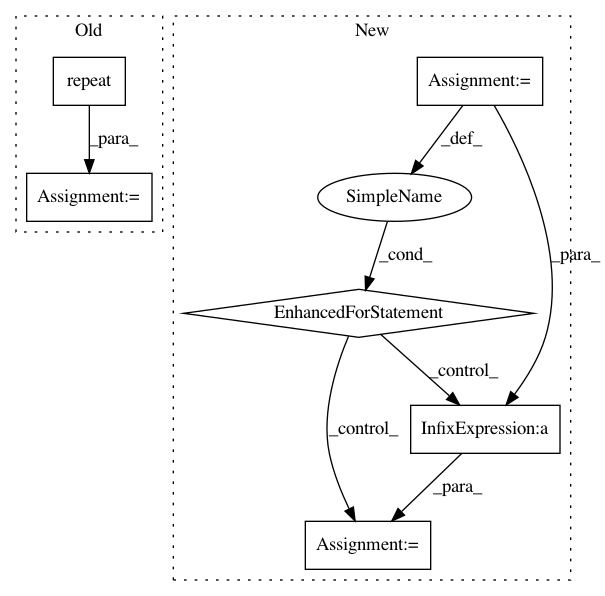

5c2ae503e85bfac2346ea7a562c476c943bb3ec9,geomstats/special_orthogonal_group.py,SpecialOrthogonalGroup,matrix_from_rotation_vector,#SpecialOrthogonalGroup#Any#,198
Before Change
assert coef_1.shape == (rot_vec.shape[0], 1)
assert coef_1.shape == (rot_vec.shape[0], 1)
identity = np.repeat(np.identity(self.dimension),
repeats=rot_vec.shape[0],
axis=0)
term_1 = coef_1 * skew_rot_vec
term_2 = coef_2 * np.matmul(skew_rot_vec, skew_rot_vec)
rot_mat = identity + term_1 + term_2
After Change
term_1 = np.zeros((n_rot_vecs, self.n, self.n))
term_2 = np.zeros_like(term_1)
for i in range(n_rot_vecs):
term_1[i] = np.eye(self.dimension) + coef_1[i] * skew_rot_vec[i]
term_2[i] = coef_2[i] * np.matmul(skew_rot_vec[i], skew_rot_vec[i])
rot_mat = term_1 + term_2
rot_mat = closest_rotation_matrix(rot_mat)
In pattern: SUPERPATTERN
Frequency: 3
Non-data size: 6
Instances
Project Name: geomstats/geomstats
Commit Name: 5c2ae503e85bfac2346ea7a562c476c943bb3ec9
Time: 2018-02-03
Author: ninamio78@gmail.com
File Name: geomstats/special_orthogonal_group.py
Class Name: SpecialOrthogonalGroup
Method Name: matrix_from_rotation_vector
Project Name: brian-team/brian2
Commit Name: 57c33160d68156692f6b935995f714c04b551edf
Time: 2013-06-25
Author: marcel.stimberg@ens.fr
File Name: brian2/tests/test_spikequeue.py
Class Name:
Method Name: create_all_to_all
Project Name: cornellius-gp/gpytorch
Commit Name: 979b8c9efa551e8c948a4aca145367a2d87ac8d6
Time: 2019-02-26
Author: balandat@fb.com
File Name: test/distributions/test_multitask_multivariate_normal.py
Class Name: TestMultiTaskMultivariateNormal
Method Name: test_multivariate_normal_batch_correlated_sampels